Resumen del juego
El objetivo es subir pisos del campanario para alcanzar a Judy antes de que caiga en un simple juego en red de plataformas 2D.
Existen multiples interacciones dentro de la partida :
Subir escaleras, al estar por encima de una y pulsar la tecla de salto.
Empujar cajas, al andar contra ellas. Este movimiento es un 25% más lento que el movimiento sin carga.
Agarrar trozos de escalera al contacto, que se usan para resolver puzles sencillos.
Arreglar escaleras (tocándolas con el trozo de escalera cogido)
Agarrarse a una cuerda, tocándola en el aire. La cuerda se balancea como un péndulo con las teclas de dirección cuando Scottie está agarrado en ella. Si no, se quedará quieta. El jugador se puede soltar saltando.
Una vez alcances el piso superior, ganará automáticamente (salvando a Judy) y pudiendo pasar al siguiente nivel. Puedes repetir los niveles cuantas veces quieras para mejorar tus tiempos
